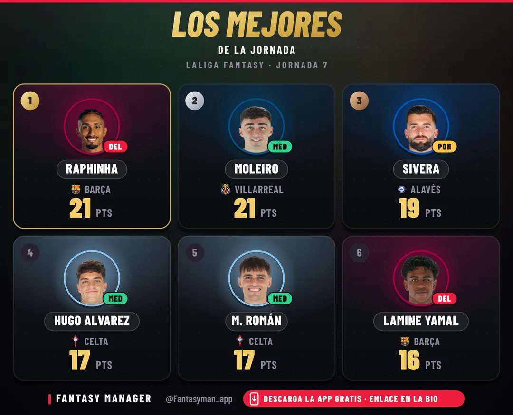

Resumen de la jornada 7
Del viernes 18 de septiembre al domingo 20 de septiembre · puntos oficiales con los de DAZN, a lunes 16 de noviembre a las 22:42
Los mejores de la jornada
| # | Jugador | Pts | Media |
|---|---|---|---|
| 1 | 21 | 13,3 | |
| 2 | 21 | 6,9 | |
| 3 | 19 | 7,4 | |
| 4 | 17 | 7,1 | |
| 5 | 17 | 3,8 | |
| 6 | 16 | 13,1 | |
| 7 | 15 | 6,2 | |
| 8 | 15 | 5,8 | |
| 9 | 15 | 4,6 | |
| 10 | 14 | 8,8 |
Once ideal de la jornada 7
Lo que ya se jugó, no una recomendación. Cómo se elige.

Resultados y MVP de cada partido
 Espanyol1-3Elche
Espanyol1-3Elche vie 18, 21:00
vie 18, 21:00 MVP: Fer Niño 15
MVP: Fer Niño 15 Osasuna1-1Rayo
Osasuna1-1Rayo sáb 19, 14:00
sáb 19, 14:00 MVP: Budimir 9
MVP: Budimir 9 Athletic0-0Alavés
Athletic0-0Alavés sáb 19, 16:15
sáb 19, 16:15 MVP: Sivera 19
MVP: Sivera 19 Celta5-0Racing
Celta5-0Racing sáb 19, 18:30
sáb 19, 18:30 MVP: Hugo Alvarez 17
MVP: Hugo Alvarez 17 Sevilla1-3Barça
Sevilla1-3Barça sáb 19, 21:00
sáb 19, 21:00 MVP: Raphinha 21
MVP: Raphinha 21 Getafe1-0Málaga
Getafe1-0Málaga dom 20, 14:00
dom 20, 14:00 MVP: Zaid Romero 13
MVP: Zaid Romero 13 Atlético2-1Real Madrid
Atlético2-1Real Madrid dom 20, 16:15
dom 20, 16:15 MVP: J. David 12
MVP: J. David 12 Villarreal3-1Levante
Villarreal3-1Levante dom 20, 18:30
dom 20, 18:30 MVP: Moleiro 21
MVP: Moleiro 21 Deportivo1-1Betis
Deportivo1-1Betis dom 20, 18:30
dom 20, 18:30 MVP: Mario Soriano 11
MVP: Mario Soriano 11 Valencia2-3Real Sociedad
Valencia2-3Real Sociedad dom 20, 21:00
dom 20, 21:00 MVP: C. Soler 14
MVP: C. Soler 14
Los que doblaron su media
| Jugador | Pts | Media |
|---|---|---|
| 17 | 3,8 | |
| 14 | 3,4 | |
| 15 | 4,6 | |
| 11 | 3,4 | |
| 11 | 3,4 | |
| 21 | 6,9 |
6 sacaron el doble de su media o más, con 10 puntos o más; el que más se pasó, Hugo Alvarez: 17 con 3,8 de media.
Los peores de la jornada
| Jugador | Pts | Media |
|---|---|---|
| -4 | 3,1 | |
| -2 | 4,5 | |
| -2 | 1,3 | |
| -1 | 2,3 | |
| -1 | 4,8 | |
| -1 | 2,5 |
6 terminaron restando puntos.
Los equipos que más puntos dieron
Los que más
| Equipo | Pts |
|---|---|
| 136 | |
| 106 | |
| 102 | |
| 100 | |
| 95 |
Los que menos
| Equipo | Pts |
|---|---|
| 6 | |
| 28 | |
| 38 |
La jornada 7, en corto
10 partidos entre el viernes 18 de septiembre y el domingo 20 de septiembre, con 30 goles. Hubo goleada: Celta 5-0 Racing.
Arriba, empatados a 21 puntos, Raphinha (Barça) y Moleiro (Villarreal). La sorpresa, Hugo Alvarez: 17 puntos cuando su media es de 3,8.
El once ideal (3-4-3) suma 180 puntos, el más alto de la temporada. El Celta fue el equipo que más puntos repartió (136); el Racing, el que menos (6). 6 jugadores acabaron en negativo; el peor, Belocian con -4.
Puntos oficiales de LaLiga Fantasy, con los de DAZN. Cómo hacemos el resumen.